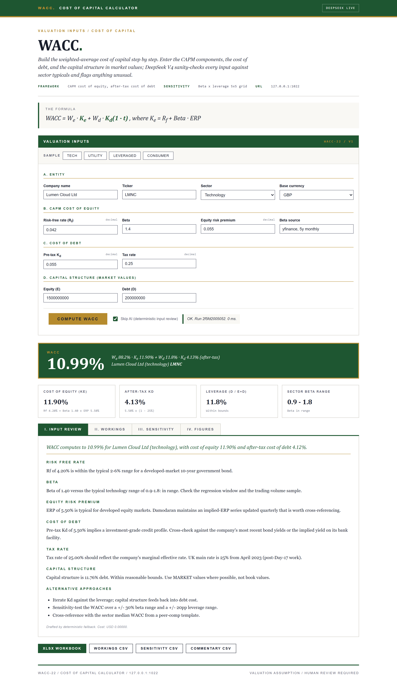
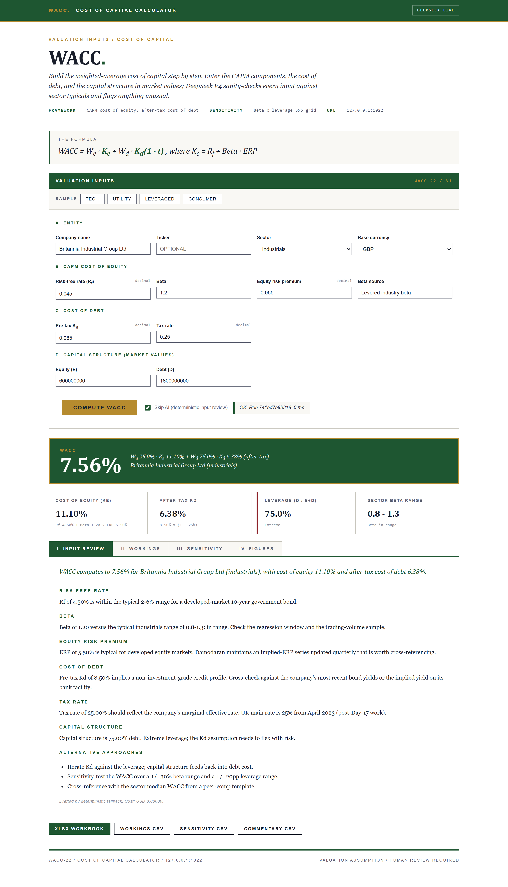
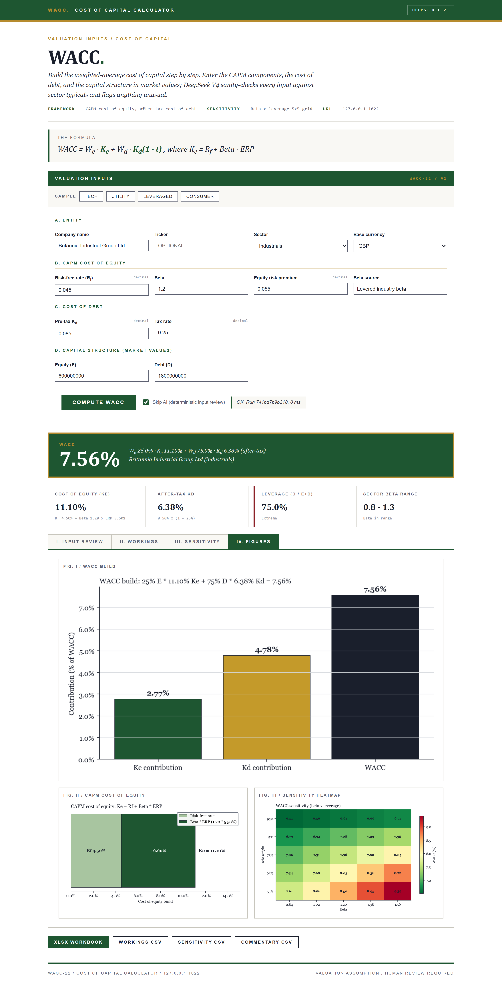

DAY 22 OF 30
WACC.
Cost of capital with sector beta checks
About the project
Build WACC step by step: CAPM cost of equity, after-tax cost of debt, capital structure. AI sanity-checks every input against sector typicals.
Local Flask app + CLI that builds the weighted-average cost of capital step by step using CAPM for the cost of equity, after-tax cost of debt, and market-value capital weights. DeepSeek V4 sanity-checks every input against sector typicals and flags anything unusual.
At a glance
- Use case
- Discount-rate build for valuations, IRR hurdles, capital-allocation tests
- Inputs
- CAPM components, after-tax cost of debt, capital structure in market values, sector enum
- Outputs
- WACC + workings + 5x5 sensitivity + 3 charts + Excel workbook + 3 CSVs
- Model
- Single DeepSeek call (~$0.0002 per run)
How it works
- WACC schema. wacc_schema.py wraps the inputs in a WaccInput dataclass.
- WACC maths. wacc_maths.compute walks the CAPM (Ke = Rf + Beta * ERP), the after-tax cost of debt (Kd_after = Kd * (1 - t)), the weights (We = E / (E + D), Wd = D / (E + D)), and the WACC = We...
- AI commentary. wacc_ai.commentary builds a digest of every input, the computed Ke, Kd_after, WACC, leverage ratio, and beta range.
- Valuation working-paper UI. Distinct from every prior day's palette.
- Excel + CSV exports. openpyxl writes the multi-sheet workbook (Summary with embedded charts, Workings step-by-step, Sensitivity grid, Commentary, Inputs).
AI integration
DeepSeek sanity-checks inputs
Limitations
- Single-currency. All inputs assumed in one currency.
- Static capital structure. The MVP treats the supplied structure as constant.
- No tax shield modelling beyond the flat tax rate.
- No country risk overlay. Emerging-market adjustments to Rf and ERP are post-30.
- AI proposes, does not opine. Every WACC needs review by a director or partner before it enters a binding model.
- Single-period view. Time-varying WACC for projects with phased risk is post-30.
Fun facts
- It builds the weighted average cost of capital step by step and sanity-checks every input against what is normal for the sector.
- The single number that sits under every valuation, demystified.
Walk-through
- Home page (cold start) - Valuation working-paper aesthetic. Cream paper, deep-green section bands, gold ruler, Georgia serif body.
- First data run: technology company - Tech sample. Beta 1.30, ERP 5.5 percent, Ke around 12 percent, light debt.
- Second data run: leveraged buyout target - Leveraged sample. Debt-heavy capital structure (60 percent debt).
- Figures tab (what the Excel export embeds) - Three charts: the WACC build as a horizontal bar walk, the CAPM cost-of-equity stacked bar, and the beta x leverage...
- AI commentary (the integration) - DeepSeek V4 reads the pre-computed WACC, the CAPM components, the leverage ratio, and the sector enum.
Screenshots




PORTFOLIO. / DAY 22
SAFWAN / SELECTED WORK